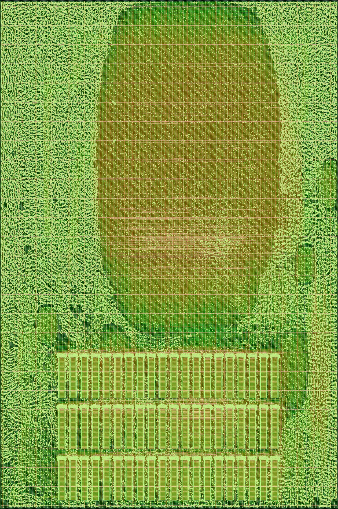
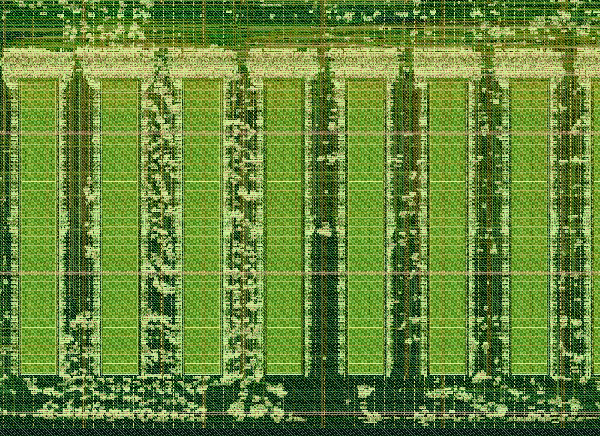
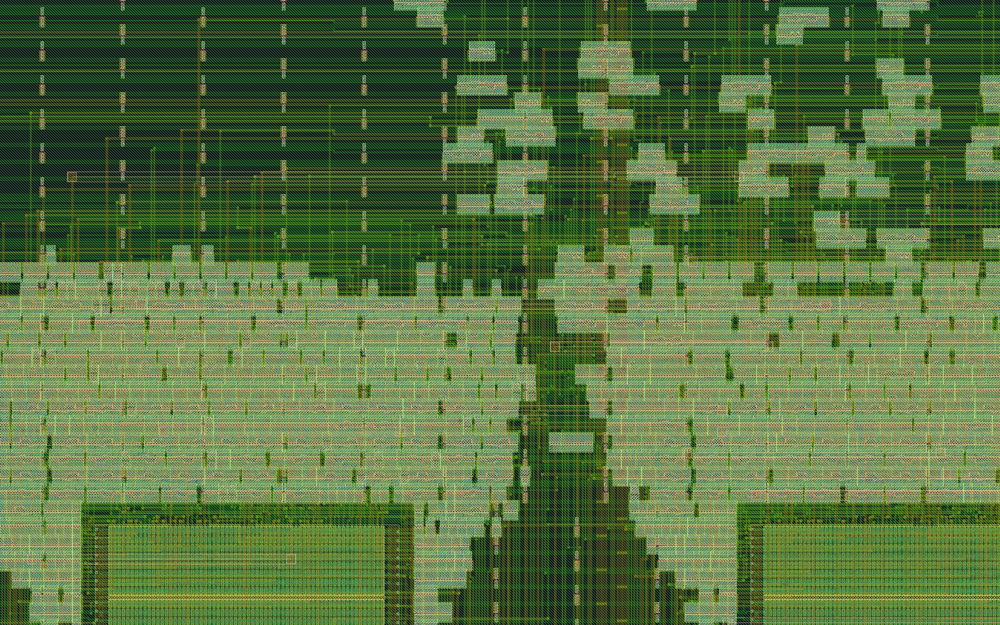
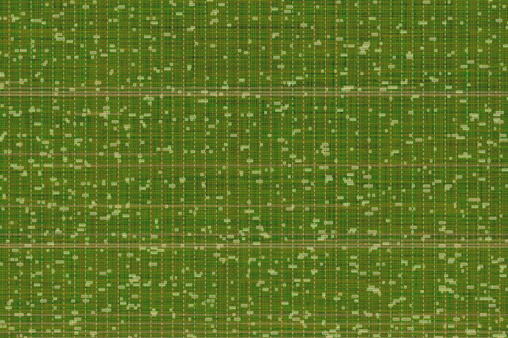

吟游诗人 Bard · 整机布线版
R135 整机（token → 下一个 token）· SKY130A · 第八版 v8d：自写掩模 ROM，3.167 × 4.767 mm（OpenFrame 用户区，15.09 mm²）· 布线零违例，setup/hold 全过
功能已核对。布线后的网表还原成门级电路后回放 3 个用例：下一个 token 分别为 32、5、128，与 C 参考实现一致，拍数与 RTL 完全相同（2,499,420 / 5,612,207 / 9,418,594 拍），v8b 和加了 hold 缓冲的 v8d 各回放一遍；把一个 ROM bank 清零后回放判错（19 ≠ 32）。这是功能/周期级回放；ROM 读时序由 Liberty + 静态时序分析覆盖，另有单 bank 门级仿真佐证。
未签核，不能流片。布线规则违例 0（64 轮剩 3 处，对 4 根网局部重布后清零）。时序（布线后 RC 提取、9 个工艺角，200 ns 时钟）：setup、hold 全部满足（hold 最差 +0.0515 ns，布线后插了 323 个延时单元，都在 ROM 外部）。信号转换时间超限 38,453 处、负载电容超限 3,646 处。天线违例 7,451 根网没修，DRC/LVS 签核没做。
0剩余布线违例
15.09 mm²芯片面积（第六版 19.34）
1.10 mm²60 个 ROM 宏（第六版 120 个综合宏 7.44）
435,604实例（含 60 个宏）
27.2 m总线长（第六版 29.8 m）
3.29 mm²标准单元




第六版（综合宏版）
第六版把共享权重表综合成 120 个标准单元宏，放在 6.441 × 3.003 mm 芯片的左右两侧；布线零违例，setup 全过，hold 252 处。下面是第六版的图。


各版对比
| 第一版（预览） | 第二版 | 第三版 | 第六版 | 第八版 v8d（本页） | |
|---|---|---|---|---|---|
| 主体单元落在宏带里 | 约 27,000 个 | 约 1,500 个 | 同第二版 | 同第二版 | —（ROM 区单独成块） |
| 芯片面积 | 19.34 mm² | 19.34 mm² | 19.34 mm² | 19.34 mm² | 15.09 mm² |
| 放置密度 | 65% | 35%，主体铺满中间 3 mm | 同第二版 | 同第二版 | 25% |
| 全局布线溢出 | 195,218 | 102,654 | 78,614 | 77,210 | 564 |
| 详细布线 | 12 轮，剩 24,314 | 64 轮，剩 10 | 11 轮降到 0 | 10 轮降到 0 | 64 轮剩 3，局部重布后 0 |
| 总线长 | 40.9 m | 31.1 m | 29.6 m | 29.8 m | 27.2 m |
| setup 违例（9 角） | — | — | 34，最差 −14.3 ns | 0 | 0 |
| hold 违例（9 角） | — | — | 496，最差 −1.10 ns | 252，最差 −0.443 ns | 0（布线后修复前 1,292） |
- 第八版把共享权重表从 120 个综合宏换成 H 自写的 60 个掩模 ROM 宏（每个 bank 存 512 个字，外围是字线与门、位线反相器加锁存器、相位触发器和延时链），按 OpenFrame 用户区 15.09 mm² 重新布图。外围单元先按坐标固定在各自宏旁（位线 ≤ 60 µm 的目标），全局放置后再放开给设计修复；布线后对 4 根网局部重布清掉最后 3 处违例，再插 323 个 hold 延时单元（放进空位、不挪旧单元，只重布 646 根网）。第七版（重硬化 120 个综合宏）布线变差，没有发布。
- 第六版之前：上一版的违例几乎全在宏上方的 met5：主体单元被摆进宏与宏之间的缝里，它们的连线只能从宏顶上绕。第二版给两侧宏带加了放置禁区，并降低放置密度，让主体在中间铺开；第三版沿用第二版的摆放，只把全局布线预留的余量从 30% 调到 20%，剩下的 10 处随之消失。第四到六版修时序：先把时序约束改对（输入按同一时钟的外部寄存器建模），再打开布局后和布线后的设计修复（顶层加了 5,726 个缓冲，原先一根地址线拖着 120 个宏、横跨 6 mm 不加缓冲），慢角的 setup 违例全部消失。
- 第一到三版只改了摆放和走线，还原后的门级电路逐字节一致；第五、六版加了缓冲，H 重新还原并完整重跑了 3 个用例，结果与第三版逐项相同。
- 整机网表来自 H 的 R135：整机主体 189,989 NAND / 80,283 LATCH；共享权重表（31.7 万门）按地址高 7 位切成 128 块，120 块非零，各做成独立的宏，用 OR 链串起来。H 已对全部 32,768 个地址证明切块后与原表逐字相同。
- 工具：LibreLane 3.0.14 / OpenROAD / KLayout，在自有机器上运行。
下载：第八版 v8d OAS / GDS / 指标 · v8b（未修 hold） · 第六版 · 第三版 · 第二版 · 第一版（预览） · 只到布局的 3D 预览 · 全部 3D 版图